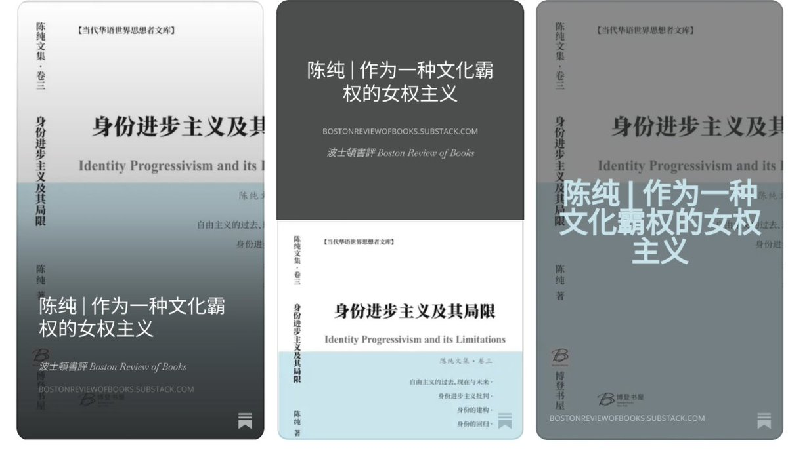

時璃風医詩🌈🏳️🌈
@hagishigure
我是不知道为什么中国人会有没经过北美后殖民派系和法国身体哲学派系这两大派系的理论训练的人做关于女权主义相关的内容甚至还能吹狗哨。
这在欧洲看来非常不可思议，就像一个声称自己是马克思主义者的人并不在乎被殖民者一样离谱。

波士頓書評Boston Review of Books
@luosiling
5月，秦晖教授《娜拉出走以后：中国女权的世纪反思》（增订版版，日本読道社）出版，其增订版序言《吞噬“娜拉”的利维坦：女性主义与中国女性之路》在书评刊发后，再次引发对中国女权问题的讨论。经作者授权，书评刊发青年学者陈纯文章《作为一种文化霸权的女权主义》。陈纯文章批判了以“身份政治”和“权 https://t.co/Uhcifg54Dq